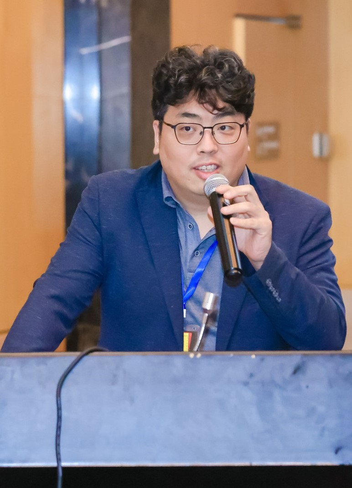

Younhyun Jung, Ph.D., Assistant Professor
Department of Software, Gachon University
Office: 312, Woongji Hall
Tell: +82-31-750-4771
E-mail: younhyun.jung@gachon.ac.kr
Research Interest
- Computer Graphics and Volume Visualization
- Mixed Reality
- Medical Imaging Visualization
- Machine Learning
Education
- 2011-2016 Ph.D. Computer Science, The University of Sydney, Sydney, Australia
- 2007-2009 M.S. Computer Science, Hoseo University, Cheonan, Republic of Korea
- 1999-2007 B.S. Computer Science, Inha University, Incheon, Republic of Korea
Research & Industry Employment
- 2017-2019 Postdoctoral Research Fellow, School of Computer Science, The University of Sydney, Australia
Conducted research activities together with hospital partners, including Royal Prince Alfred (RPA) hospital and Renji and Ruijin hospitals affiliated to School of Medicine, Shanghai Jiao Tong University for medical image visualization algorithm development and its clinical evaluation. - 2011-2016 Research Assistant, School of Computer Science, The University of Sydney, Sydeny, Australia
- 2007-2009 Engineerer, Division of Visual Display, Samsung Electronics Inc., Suwon, Republic of Korea
- 2005-2007 Engineerer, Samsung Electronics Software Membership, Seoul, Republic of Korea
- 2003-2004 Engineerer, GaonI Inc., Seoul, Republic of Korea
- 2002-2004 Engineerer, Nexcon World Inc., Samsung Electronics, Cheonan, Republic of Korea
Academic Awards & Services
- 2021, Editorial Board, Virtual Reality & Intelligent Hardware, Science Press, China
- 2021, Committee, VR Medical Workshop, 38th Computer Graphics International, Switzerland
- 2021 General Research Program, National Research Foundation of Korea, Republic of Korea
- 2020 Beginning Independent Researcher Program, National Research Foundation of Korea, Republic of Korea
- 2020 Newly appointed Professor Program, Gachon University, Republic of Korea
- 2019 Nvidia Data Science Grant: A deep learning framework for automated direct volume rendering visualization of medical images, USA
- 2018 Panel, 2nd China University Students VRAR Developer Competition, Shanghai Jiao Tong University, Shanghai, China
- 2016 NSW Helath Secretary Award, the 18th Annual NSW Health Award: Home Heamo Dialysis Telehealth Project, Australia
- 2015 Chair of the Board Quality Award for Innovation and Excellence, Sydney Local Health District: Home Heamo Dialysis Telehealth Project, Australia
- 2014 Local Organization Committee, 31st Computer Graphics International, Australia
Invited Talks and Guest Lecture
- 2021, INFO5306 Enterprise Healthcare Information System: Healthcare Information and Data Visualisation, The University of Sydney, Australia
- 2021, Medical with AR, Gmeditec, Republic of Korea
- 2020, INFO5306 Enterprise Healthcare Information System: Healthcare Information and Data Visualisation, The University of Sydney, Australia
- 2018 20th Eurographics/IEEE Conference on Visualization (EuroVis): Feature of Interest-based Direct Volume Rendering Using Contextual Saliency-driven Ray Profile Analysis, Czech Republic
- 2018 2nd China University Students VRAR Developer Competition: Mixed Reality Medical Imaging Visualization, China
- 2016 2nd International Workshop on Computer Graphics in Biomedical Imaging Data: Multi-modal Image Processing and Visualization: Application to PET-CT, Greece
- 2015 John Loewenthal Society Scientific Presentation: Medical Image Visualization and Its Application to Clinical Diagnosis, Australia
- 2014 Korea Cyber University: Volume Visualization Automation Algorithms, Republic of Korea
Reviewer Activities
- 2021-Present International Symposium on Mixed and Augmented Reality (ISMAR), IEEE
- 2021-Present Virtual Reality & Intelligent Hardware, Science Press
- 2020-Present Computer and Education, Elsevier
- 2019-Present Access, IEEE
- 2019-Present Biomedical Signal Processing Control, Elsevier
- 2019 Pacific Visualization Symposium, IEEE
- 2019 Asian Conference on Pattern Recognition (ACPR), Springer
- 2018-Present Computers in Biology and Medicine, Elsevier
- 2017 Digital Image Computing: Techniques and Applications (DICTA), IEEE
- 2016-Present International Journal of Computer Assisted Radiology and Surgery, Springer
- 2017 International Symposium on Biomedical Imaging (ISBI), IEEE
- 2014-2016 Engineering in Medicine and Biology Society (EMBC), IEEE
- 2013-Present the Visual Computer, Elsevier
- 2013-Present Journal of Computational Design and Engineering, Elsevier
- 2013-Present Computer Graphics International (CGI), Eurographics
Research Prototypes
Several of my theoretical research outcomes has been recognized for its research impact and implemented for clinical use / trial.
- 2020-Present Computer-aided Surgical Navigation System for Sinus, Spine, and Ear Surgery, GMeditec and Gil Hospital, Incheon, Republic of Korea
- 2018-Present Patient Viewer for Multi-modality PET-CT Medical Imaging Data, RPA hospital, Sydney, Australia
- 2016-Present Clinical Trial Visualization Software for Multi-modality PET-CT Lung Cancer, RPA hospital Sydney, Australia and Renji and Ruijin hospitals affiliated to School of Medicine, Shanghai Jiao Tong University, Shanghai, China
- 2014-2016 Hospital Telehealth Home Dialysis Monitoring Software, Nepean Hospital, Kingswood, Australia